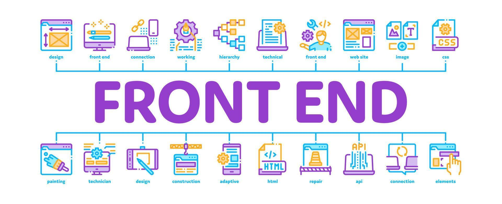

- Full-Stack
- Front-End
- Back-End
Full Stack Development

Full-Stack = Front-End + Back-End
Front-End
Technologies for user-facing interfaces
- HTML – Page structure
- CSS – Styling the UI
- JavaScript – User interactivity
- TypeScript – Typed JS (optional)
- React / Vue / Angular – JS frameworks
- Tailwind CSS / Bootstrap – CSS frameworks
Back-End
Handles logic, database, and server-side operations
- Node.js – JavaScript runtime
- Express.js – Web framework for Node
- Python (Flask / Django)
- Java (Spring Boot)
- PHP (Laravel)
- Go / Ruby
Databases
- MongoDB – NoSQL DB
- MySQL / PostgreSQL – SQL databases
- Redis – In-memory storage
DevOps
- Git, GitHub – Version control
- Docker – Containerization
- CI/CD (GitHub Actions / Jenkins)
- Nginx / Apache – Web servers
- Linux / Terminal – Basic commands
- Cloud (Vercel, Render, AWS)
Optional / Advanced
- WebSockets – Real-time communication
- Next.js / Nuxt.js – Server-side rendering
- GraphQL – Query-based APIs
- Prisma / Sequelize – ORM for DB
- Jest / Mocha / Cypress – Testing tools
- Redux / Zustand / Recoil – State management
Front-End Development

User Interface and Experience
Core Technologies
- HTML – Basic structure
- CSS – Styles and layouts
- JavaScript – Interactions and behavior
- TypeScript – Safer, typed JS
UI Frameworks
- React – Component-based
- Vue.js – Reactive framework
- Angular – Full-featured framework
- Tailwind CSS / Bootstrap – Pre-built UI styling
Build Tools
- Vite / Webpack – Module bundlers
- Babel – JS compiler
Optional / Advanced
- Next.js / Nuxt.js – SSR frameworks
- Redux / Zustand / Recoil – State management
- Cypress / Jest – Testing tools
- GSAP / Framer Motion – Animations
Back-End Development

Server-side logic, APIs, and databases
Programming Languages
- JavaScript (Node.js)
- Python (Flask / Django)
- Java (Spring Boot)
- PHP (Laravel)
- Ruby (Rails)
- Go (Golang)
Databases
- MongoDB – Document-based
- MySQL / PostgreSQL – Relational
- Redis – Fast, in-memory
API Development
- REST – Conventional API
- GraphQL – Flexible data fetching
- JSON / XML – Data formats
DevOps & Tools
- Git, GitHub
- Docker – Deployment
- CI/CD pipelines
- Nginx / Apache
- Linux – Server commands
Optional / Advanced
- WebSockets – Real-time support
- Prisma / Sequelize – ORM tools
- Unit testing – Mocha / Jest
- API security – JWT / OAuth